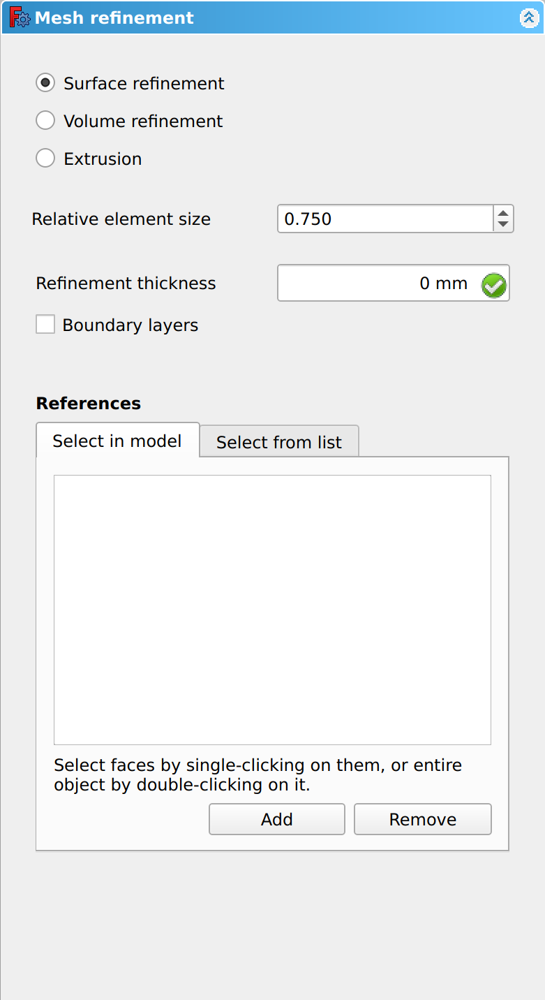
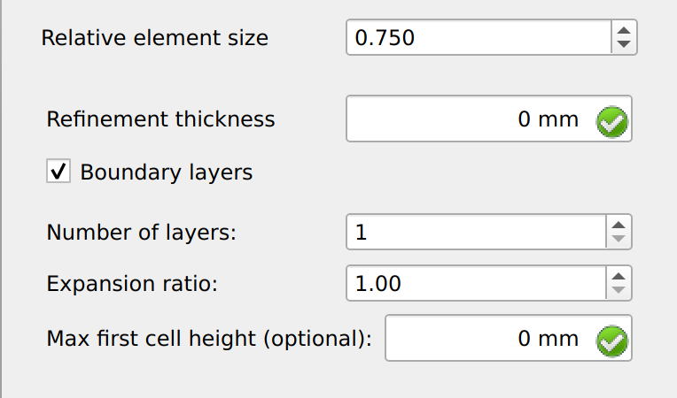
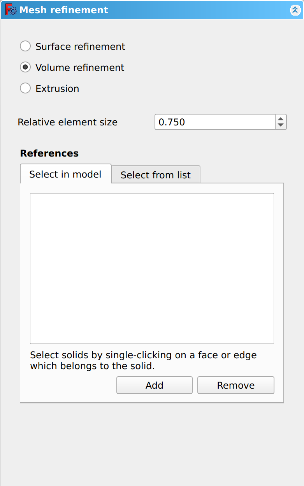
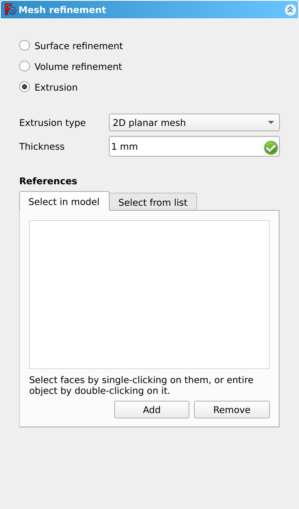
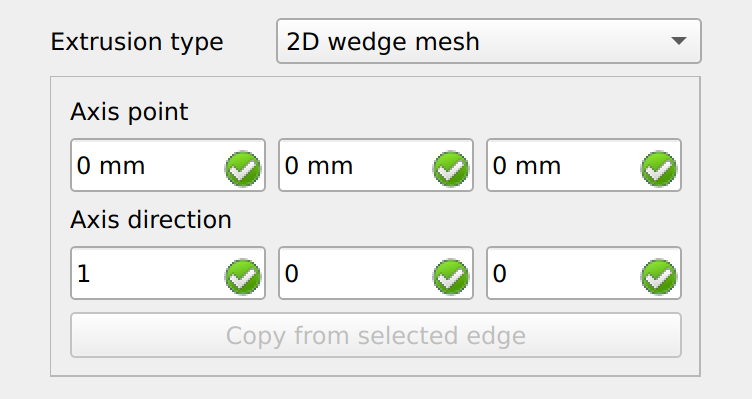
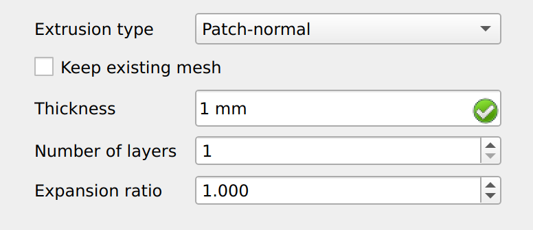
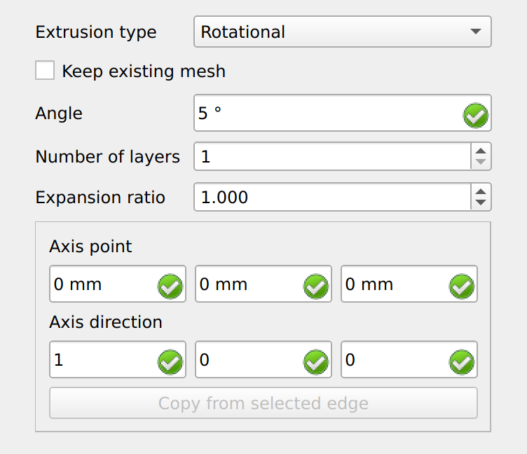

CfdOF MeshRegion/fr
|
|
| Emplacement du menu |
|---|
| CfdOF → Mesh refinement |
| Ateliers |
| CfdOF |
| Raccourci par défaut |
| M R |
| Introduit dans la version |
| - |
| Voir aussi |
| CfdOF Maillage à partir d'une forme |
Description
La commande  CfdOF Densification du maillage crée un objet contenant les données nécessaires pour ajouter des densifications de surface, de volume et d'extrusion à un maillage de référence. Ces données peuvent être modifiées dans un panneau de tâches.
CfdOF Densification du maillage crée un objet contenant les données nécessaires pour ajouter des densifications de surface, de volume et d'extrusion à un maillage de référence. Ces données peuvent être modifiées dans un panneau de tâches.
Utilisation
Créer un objet de données de densification
- Sélectionnez un objet de données [GeometryName]_Mesh dans l'arborescence.
- Il existe plusieurs façons de lancer la commande :
- Cliquez sur le bouton
 Mesh refinement.
Mesh refinement. - Sélectionnez l'option CfdOF → Mesh refinement du menu.
- Cliquez sur le bouton
- Un objet de données MeshRefinement est ajouté à l'objet de données [GeometryName]_Mesh.
- Le panneau des tâches s'ouvre. Voir Options pour plus d'informations.
- Cliquez sur le bouton OK pour confirmer et terminer la commande.
- Vous pouvez répéter la commande pour ajouter d'autres objets de données de raffinement à l'objet de données [GeometryName]_Mesh.
{kind=link}
Modifier un objet de données de densification
- Double-cliquez sur un objet de données MeshRefinement dans l'arborescence.
- Le panneau de tâches s'ouvre. Consultez la section Options pour plus d'informations.
- Cliquez sur le bouton OK pour confirmer et terminer la commande.
Options
Le panneau des tâches propose les paramètres suivants :
{kind=link}

Surface Refinement
{kind=link}

Volume Refinement
{kind=link}

Extrusion
{kind=link}

{kind=link}

{kind=link}

{kind=link}

Notes
- Menu: Analysis container, CFD mesh, Mesh refinement, Interface dynamic refinement, Shockwave dynamic refinement, Select models, Add fluid properties, Fluid boundary, Initialise, Initialisation zone, Porous zone, Mean velocity force, Reporting function, Cfd scalar transport function, Solver job control
- Démarrer avec FreeCAD
- Installation : Téléchargements, Windows, Linux, Mac, Logiciels supplémentaires, Docker, AppImage, Ubuntu Snap
- Bases : À propos de FreeCAD, Interface, Navigation par la souris, Méthodes de sélection, Objet name, Préférences, Ateliers, Structure du document, Propriétés, Contribuer à FreeCAD, Faire un don
- Aide : Tutoriels, Tutoriels vidéo
- Ateliers : Std Base, Assembly, BIM, CAM, Draft, FEM, Inspection, Material, Mesh, OpenSCAD, Part, PartDesign, Points, Reverse Engineering, Robot, Sketcher, Spreadsheet, Surface, TechDraw, Test